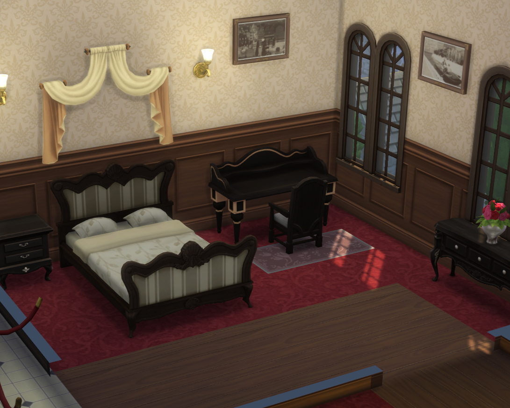
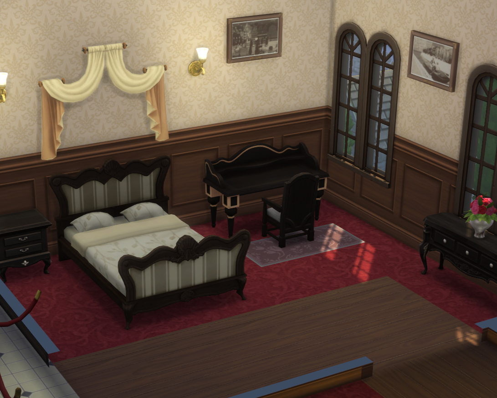

Majestic Windenburg Manor

3 Havensworth Lane, Windenburg
Embrace the grandeur of yesteryear with Majestic Windenburg Manor, a regal masterpiece reminiscent of a European castle. Adorned with a private winding driveway, elegant fountains, and stately columns, this sprawling estate exudes timeless sophistication from every angle. Step into a world of opulence as you wander through the grand halls, where a lavish dining room and sumptuous living spaces await your every whim. Beyond the confines of the manor, discover a veritable paradise – from meticulously landscaped gardens and verdant greenhouses to a charming hedge maze and pristine tennis courts. Set against a backdrop of towering forests and majestic mountains, this estate offers a glimpse into a bygone era of aristocratic splendor – where luxury and legacy intertwine seamlessly.- Price: $11,250,000
- Lot size: 4 acres (Approxiametly 174,000 sq., ft).
- Rooms: 4 bed, 3 bath
- Ammenities/Features:
- A team of Butlers
- Butlers Kicthen
- Exquisite landscaping
- Fountain in the front and back
- Multiple gardens
- A hedge maze
- A grand dining and living room
- 360 degree views of Windenburg and the alps
- High-end dj booth on the back deck
- A greenhouse


 
